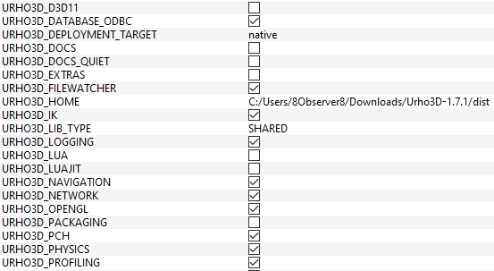

8Observer8
If STATIC does not want to work for me then I will try to build to SHARED. I found this option in CMake:
Now my config file looks like this now:

But I got these errors:
[ 87%] Building CXX object Source/Urho3D/CMakeFiles/Urho3D.dir/Urho2D/TileMap2D.cpp.obj
[ 88%] Building CXX object Source/Urho3D/CMakeFiles/Urho3D.dir/Urho2D/TileMapDefs2D.cpp.obj
[ 88%] Building CXX object Source/Urho3D/CMakeFiles/Urho3D.dir/Urho2D/TileMapLayer2D.cpp.obj
[ 88%] Building CXX object Source/Urho3D/CMakeFiles/Urho3D.dir/Urho2D/TmxFile2D.cpp.obj
[ 88%] Building CXX object Source/Urho3D/CMakeFiles/Urho3D.dir/Urho2D/Urho2D.cpp.obj
[ 88%] Linking CXX shared library ..\..\bin\Urho3D.dll
../ThirdParty/Civetweb/libCivetweb.a(civetweb.c.obj):civetweb.c:(.text+0xcf9): undefined reference to `_imp__send@16'
../ThirdParty/Civetweb/libCivetweb.a(civetweb.c.obj):civetweb.c:(.text+0x159b): undefined reference to `_imp__setsockopt@20'
../ThirdParty/Civetweb/libCivetweb.a(civetweb.c.obj):civetweb.c:(.text+0x1a00): undefined reference to `_imp__getnameinfo@28'
../ThirdParty/Civetweb/libCivetweb.a(civetweb.c.obj):civetweb.c:(.text+0x1dcb): undefined reference to `_imp__closesocket@4'
../ThirdParty/Civetweb/libCivetweb.a(civetweb.c.obj):civetweb.c:(.text+0x22af): undefined reference to `_imp__select@20'../ThirdParty/Civetweb/libCivetweb.a(civetweb.c.obj):civetweb.c:(.text+0x22ca): undefined reference to `__WSAFDIsSet@8'
../ThirdParty/Civetweb/libCivetweb.a(civetweb.c.obj):civetweb.c:(.text+0x2335): undefined reference to `_imp__select@20'../ThirdParty/Civetweb/libCivetweb.a(civetweb.c.obj):civetweb.c:(.text+0x2aed): undefined reference to `_imp__recv@16'
../ThirdParty/Civetweb/libCivetweb.a(civetweb.c.obj):civetweb.c:(.text+0x403f): undefined reference to `_imp__setsockopt@20'
../ThirdParty/Civetweb/libCivetweb.a(civetweb.c.obj):civetweb.c:(.text+0x4061): undefined reference to `_imp__shutdown@8'
../ThirdParty/Civetweb/libCivetweb.a(civetweb.c.obj):civetweb.c:(.text+0x408b): undefined reference to `_imp__ioctlsocket@12'
../ThirdParty/Civetweb/libCivetweb.a(civetweb.c.obj):civetweb.c:(.text+0x40be): undefined reference to `_imp__closesocket@4'
../ThirdParty/Civetweb/libCivetweb.a(civetweb.c.obj):civetweb.c:(.text+0x45c3): undefined reference to `_imp__accept@12'../ThirdParty/Civetweb/libCivetweb.a(civetweb.c.obj):civetweb.c:(.text+0x45dc): undefined reference to `_imp__ntohl@4'
../ThirdParty/Civetweb/libCivetweb.a(civetweb.c.obj):civetweb.c:(.text+0x4638): undefined reference to `_imp__closesocket@4'
../ThirdParty/Civetweb/libCivetweb.a(civetweb.c.obj):civetweb.c:(.text+0x4800): undefined reference to `_imp__getsockname@12'
../ThirdParty/Civetweb/libCivetweb.a(civetweb.c.obj):civetweb.c:(.text+0x4838): undefined reference to `_imp__setsockopt@20'
../ThirdParty/Civetweb/libCivetweb.a(civetweb.c.obj):civetweb.c:(.text+0x87b6): undefined reference to `_imp__ntohl@4'
../ThirdParty/Civetweb/libCivetweb.a(civetweb.c.obj):civetweb.c:(.text+0x8ac8): undefined reference to `_imp__ntohs@4'
../ThirdParty/Civetweb/libCivetweb.a(civetweb.c.obj):civetweb.c:(.text+0xa3dd): undefined reference to `_imp__ntohs@4'
../ThirdParty/Civetweb/libCivetweb.a(civetweb.c.obj):civetweb.c:(.text+0xa407): undefined reference to `_imp__ntohl@4'
../ThirdParty/Civetweb/libCivetweb.a(civetweb.c.obj):civetweb.c:(.text+0xb1ac): undefined reference to `_imp__getaddrinfo@16'
../ThirdParty/Civetweb/libCivetweb.a(civetweb.c.obj):civetweb.c:(.text+0xb20f): undefined reference to `_imp__freeaddrinfo@4'
../ThirdParty/Civetweb/libCivetweb.a(civetweb.c.obj):civetweb.c:(.text+0xb22e): undefined reference to `_imp__htons@4'
../ThirdParty/Civetweb/libCivetweb.a(civetweb.c.obj):civetweb.c:(.text+0xb253): undefined reference to `_imp__socket@12'../ThirdParty/Civetweb/libCivetweb.a(civetweb.c.obj):civetweb.c:(.text+0xb2a0): undefined reference to `_imp__connect@12'
../ThirdParty/Civetweb/libCivetweb.a(civetweb.c.obj):civetweb.c:(.text+0xb340): undefined reference to `_imp__getsockname@12'
../ThirdParty/Civetweb/libCivetweb.a(civetweb.c.obj):civetweb.c:(.text+0xb449): undefined reference to `_imp__freeaddrinfo@4'
../ThirdParty/Civetweb/libCivetweb.a(civetweb.c.obj):civetweb.c:(.text+0xb4b2): undefined reference to `_imp__closesocket@4'
../ThirdParty/Civetweb/libCivetweb.a(civetweb.c.obj):civetweb.c:(.text+0xb51a): undefined reference to `_imp__closesocket@4'
../ThirdParty/Civetweb/libCivetweb.a(civetweb.c.obj):civetweb.c:(.text+0xb578): undefined reference to `_imp__closesocket@4'
../ThirdParty/Civetweb/libCivetweb.a(civetweb.c.obj):civetweb.c:(.text+0xb77c): undefined reference to `_imp__WSACleanup@0'
../ThirdParty/Civetweb/libCivetweb.a(civetweb.c.obj):civetweb.c:(.text+0xb7bc): undefined reference to `_imp__WSAStartup@8'
../ThirdParty/Civetweb/libCivetweb.a(civetweb.c.obj):civetweb.c:(.text+0xbf22): undefined reference to `_imp__socket@12'../ThirdParty/Civetweb/libCivetweb.a(civetweb.c.obj):civetweb.c:(.text+0xbf5e): undefined reference to `_imp__setsockopt@20'
../ThirdParty/Civetweb/libCivetweb.a(civetweb.c.obj):civetweb.c:(.text+0xbfa3): undefined reference to `_imp__bind@12'
../ThirdParty/Civetweb/libCivetweb.a(civetweb.c.obj):civetweb.c:(.text+0xbfc6): undefined reference to `_imp__listen@8'
../ThirdParty/Civetweb/libCivetweb.a(civetweb.c.obj):civetweb.c:(.text+0xbff1): undefined reference to `_imp__getsockname@12'
../ThirdParty/Civetweb/libCivetweb.a(civetweb.c.obj):civetweb.c:(.text+0xc10c): undefined reference to `_imp__ntohs@4'
../ThirdParty/Civetweb/libCivetweb.a(civetweb.c.obj):civetweb.c:(.text+0xc16d): undefined reference to `_imp__htonl@4'
../ThirdParty/Civetweb/libCivetweb.a(civetweb.c.obj):civetweb.c:(.text+0xc185): undefined reference to `_imp__htons@4'
../ThirdParty/Civetweb/libCivetweb.a(civetweb.c.obj):civetweb.c:(.text+0xc4c8): undefined reference to `_imp__closesocket@4'
../ThirdParty/Civetweb/libCivetweb.a(civetweb.c.obj):civetweb.c:(.text+0xc79d): undefined reference to `_imp__closesocket@4'
../ThirdParty/kNet/libkNet.a(Network.cpp.obj):Network.cpp:(.text+0x1c2): undefined reference to `_imp__WSAGetLastError@0'
../ThirdParty/kNet/libkNet.a(Network.cpp.obj):Network.cpp:(.text+0x1e5): undefined reference to `_imp__gethostname@8'
../ThirdParty/kNet/libkNet.a(Network.cpp.obj):Network.cpp:(.text+0x1f6): undefined reference to `_imp__gethostbyname@4'
../ThirdParty/kNet/libkNet.a(Network.cpp.obj):Network.cpp:(.text+0x279): undefined reference to `_imp__getaddrinfo@16'
../ThirdParty/kNet/libkNet.a(Network.cpp.obj):Network.cpp:(.text+0x2a7): undefined reference to `_imp__freeaddrinfo@4'
../ThirdParty/kNet/libkNet.a(Network.cpp.obj):Network.cpp:(.text+0x2de): undefined reference to `_imp__WSAStartup@8'
../ThirdParty/kNet/libkNet.a(Network.cpp.obj):Network.cpp:(.text+0x304): undefined reference to `_imp__gethostname@8'
../ThirdParty/kNet/libkNet.a(Network.cpp.obj):Network.cpp:(.text+0x5f6): undefined reference to `_imp__getaddrinfo@16'
../ThirdParty/kNet/libkNet.a(Network.cpp.obj):Network.cpp:(.text+0x621): undefined reference to `_imp__socket@12'
../ThirdParty/kNet/libkNet.a(Network.cpp.obj):Network.cpp:(.text+0x66d): undefined reference to `_imp__bind@12'
../ThirdParty/kNet/libkNet.a(Network.cpp.obj):Network.cpp:(.text+0x688): undefined reference to `_imp__freeaddrinfo@4'
../ThirdParty/kNet/libkNet.a(Network.cpp.obj):Network.cpp:(.text+0x6b0): undefined reference to `_imp__ntohs@4'
../ThirdParty/kNet/libkNet.a(Network.cpp.obj):Network.cpp:(.text+0x7c1): undefined reference to `_imp__setsockopt@20'
../ThirdParty/kNet/libkNet.a(Network.cpp.obj):Network.cpp:(.text+0x7dd): undefined reference to `_imp__listen@8'
../ThirdParty/kNet/libkNet.a(Network.cpp.obj):Network.cpp:(.text+0x801): undefined reference to `_imp__ntohs@4'
../ThirdParty/kNet/libkNet.a(Network.cpp.obj):Network.cpp:(.text+0x835): undefined reference to `_imp__closesocket@4'
../ThirdParty/kNet/libkNet.a(Network.cpp.obj):Network.cpp:(.text+0x847): undefined reference to `_imp__freeaddrinfo@4'
../ThirdParty/kNet/libkNet.a(Network.cpp.obj):Network.cpp:(.text+0x867): undefined reference to `_imp__closesocket@4'
../ThirdParty/kNet/libkNet.a(Network.cpp.obj):Network.cpp:(.text+0xe7a): undefined reference to `_imp__WSAGetLastError@0'
../ThirdParty/kNet/libkNet.a(Network.cpp.obj):Network.cpp:(.text+0x10a5): undefined reference to `_imp__WSACleanup@0'
../ThirdParty/kNet/libkNet.a(Network.cpp.obj):Network.cpp:(.text+0x1fe4): undefined reference to `_imp__getaddrinfo@16'
../ThirdParty/kNet/libkNet.a(Network.cpp.obj):Network.cpp:(.text+0x2027): undefined reference to `_imp__WSASocketA@24'
../ThirdParty/kNet/libkNet.a(Network.cpp.obj):Network.cpp:(.text+0x2072): undefined reference to `_imp__WSAConnect@28'
../ThirdParty/kNet/libkNet.a(Network.cpp.obj):Network.cpp:(.text+0x208d): undefined reference to `_imp__freeaddrinfo@4'
../ThirdParty/kNet/libkNet.a(Network.cpp.obj):Network.cpp:(.text+0x20ca): undefined reference to `_imp__getsockname@12'
../ThirdParty/kNet/libkNet.a(Network.cpp.obj):Network.cpp:(.text+0x210f): undefined reference to `_imp__getpeername@12'
../ThirdParty/kNet/libkNet.a(Network.cpp.obj):Network.cpp:(.text+0x229a): undefined reference to `_imp__closesocket@4'
../ThirdParty/kNet/libkNet.a(Network.cpp.obj):Network.cpp:(.text+0x22ac): undefined reference to `_imp__freeaddrinfo@4'
../ThirdParty/kNet/libkNet.a(Network.cpp.obj):Network.cpp:(.text+0x2307): undefined reference to `_imp__ntohs@4'
../ThirdParty/kNet/libkNet.a(Network.cpp.obj):Network.cpp:(.text+0x2346): undefined reference to `_imp__ntohs@4'
../ThirdParty/kNet/libkNet.a(NetworkServer.cpp.obj):NetworkServer.cpp:(.text+0xd6a): undefined reference to `_imp__ntohs@4'
../ThirdParty/kNet/libkNet.a(NetworkServer.cpp.obj):NetworkServer.cpp:(.text+0xed6): undefined reference to `_imp__accept@12'
../ThirdParty/kNet/libkNet.a(NetworkServer.cpp.obj):NetworkServer.cpp:(.text+0xf05): undefined reference to `_imp__ntohs@4'
../ThirdParty/kNet/libkNet.a(NetworkServer.cpp.obj):NetworkServer.cpp:(.text+0xfe7): undefined reference to `_imp__getsockname@12'
../ThirdParty/kNet/libkNet.a(NetworkServer.cpp.obj):NetworkServer.cpp:(.text+0x1134): undefined reference to `_imp__closesocket@4'
../ThirdParty/kNet/libkNet.a(Socket.cpp.obj):Socket.cpp:(.text+0x42c): undefined reference to `_imp__WSACreateEvent@0'
../ThirdParty/kNet/libkNet.a(Socket.cpp.obj):Socket.cpp:(.text+0x483): undefined reference to `_imp__WSACloseEvent@4'
../ThirdParty/kNet/libkNet.a(Socket.cpp.obj):Socket.cpp:(.text+0x4db): undefined reference to `_imp__setsockopt@20'
../ThirdParty/kNet/libkNet.a(Socket.cpp.obj):Socket.cpp:(.text+0x51b): undefined reference to `_imp__setsockopt@20'
../ThirdParty/kNet/libkNet.a(Socket.cpp.obj):Socket.cpp:(.text+0x56b): undefined reference to `_imp__getsockopt@20'
../ThirdParty/kNet/libkNet.a(Socket.cpp.obj):Socket.cpp:(.text+0x5cb): undefined reference to `_imp__getsockopt@20'
../ThirdParty/kNet/libkNet.a(Socket.cpp.obj):Socket.cpp:(.text+0x79e): undefined reference to `_imp__shutdown@8'
../ThirdParty/kNet/libkNet.a(Socket.cpp.obj):Socket.cpp:(.text+0x8a9): undefined reference to `_imp__shutdown@8'
../ThirdParty/kNet/libkNet.a(Socket.cpp.obj):Socket.cpp:(.text+0x8b8): undefined reference to `_imp__closesocket@4'
../ThirdParty/kNet/libkNet.a(Socket.cpp.obj):Socket.cpp:(.text+0x9bb): undefined reference to `_imp__WSAResetEvent@4'
../ThirdParty/kNet/libkNet.a(Socket.cpp.obj):Socket.cpp:(.text+0xa06): undefined reference to `_imp__WSARecv@28'
../ThirdParty/kNet/libkNet.a(Socket.cpp.obj):Socket.cpp:(.text+0xafb): undefined reference to `_imp__WSARecvFrom@36'
../ThirdParty/kNet/libkNet.a(Socket.cpp.obj):Socket.cpp:(.text+0xc8c): undefined reference to `_imp__recv@16'
../ThirdParty/kNet/libkNet.a(Socket.cpp.obj):Socket.cpp:(.text+0xd1e): undefined reference to `_imp__recvfrom@24'
../ThirdParty/kNet/libkNet.a(Socket.cpp.obj):Socket.cpp:(.text+0xd42): undefined reference to `_imp__ntohs@4'
../ThirdParty/kNet/libkNet.a(Socket.cpp.obj):Socket.cpp:(.text+0xe28): undefined reference to `_imp__WSAGetOverlappedResult@20'
../ThirdParty/kNet/libkNet.a(Socket.cpp.obj):Socket.cpp:(.text+0xfce): undefined reference to `_imp__ioctlsocket@12'
../ThirdParty/kNet/libkNet.a(Socket.cpp.obj):Socket.cpp:(.text+0x104f): undefined reference to `_imp__select@20'
../ThirdParty/kNet/libkNet.a(Socket.cpp.obj):Socket.cpp:(.text+0x10c7): undefined reference to `_imp__send@16'
../ThirdParty/kNet/libkNet.a(Socket.cpp.obj):Socket.cpp:(.text+0x113f): undefined reference to `_imp__sendto@24'
../ThirdParty/kNet/libkNet.a(Socket.cpp.obj):Socket.cpp:(.text+0x122a): undefined reference to `_imp__WSAGetOverlappedResult@20'
../ThirdParty/kNet/libkNet.a(Socket.cpp.obj):Socket.cpp:(.text+0x12fb): undefined reference to `_imp__WSAGetOverlappedResult@20'
../ThirdParty/kNet/libkNet.a(Socket.cpp.obj):Socket.cpp:(.text+0x1402): undefined reference to `_imp__WSAResetEvent@4'
../ThirdParty/kNet/libkNet.a(Socket.cpp.obj):Socket.cpp:(.text+0x144a): undefined reference to `_imp__WSASend@28'
../ThirdParty/kNet/libkNet.a(Socket.cpp.obj):Socket.cpp:(.text+0x14c3): undefined reference to `_imp__WSASendTo@36'
../ThirdParty/kNet/libkNet.a(Socket.cpp.obj):Socket.cpp:(.text+0x1549): undefined reference to `_imp__WSASetEvent@4'
../ThirdParty/kNet/libkNet.a(Socket.cpp.obj):Socket.cpp:(.text+0x15dc): undefined reference to `_imp__setsockopt@20'
../ThirdParty/kNet/libkNet.a(Socket.cpp.obj):Socket.cpp:(.text+0x1e96): undefined reference to `_imp__setsockopt@20'
../ThirdParty/kNet/libkNet.a(Socket.cpp.obj):Socket.cpp:(.text+0x1f20): undefined reference to `_imp__htons@4'
../ThirdParty/kNet/libkNet.a(Socket.cpp.obj):Socket.cpp:(.text+0x1fbb): undefined reference to `_imp__getpeername@12'
../ThirdParty/kNet/libkNet.a(Socket.cpp.obj):Socket.cpp:(.text+0x1fdf): undefined reference to `_imp__ntohs@4'
../ThirdParty/kNet/libkNet.a(Socket.cpp.obj):Socket.cpp:(.text+0x202e): undefined reference to `_imp__getsockname@12'
../ThirdParty/kNet/libkNet.a(W32Event.cpp.obj):W32Event.cpp:(.text+0x25): undefined reference to `_imp__WSACreateEvent@0'
../ThirdParty/kNet/libkNet.a(W32Event.cpp.obj):W32Event.cpp:(.text+0x4e): undefined reference to `_imp__WSACreateEvent@0'
../ThirdParty/kNet/libkNet.a(W32Event.cpp.obj):W32Event.cpp:(.text+0x6e): undefined reference to `_imp__WSACloseEvent@4'../ThirdParty/kNet/libkNet.a(W32Event.cpp.obj):W32Event.cpp:(.text+0xaf): undefined reference to `_imp__WSAResetEvent@4'../ThirdParty/kNet/libkNet.a(W32Event.cpp.obj):W32Event.cpp:(.text+0xdf): undefined reference to `_imp__WSASetEvent@4'
../ThirdParty/kNet/libkNet.a(W32Event.cpp.obj):W32Event.cpp:(.text+0x132): undefined reference to `_imp__WSAWaitForMultipleEvents@20'
../ThirdParty/kNet/libkNet.a(W32Event.cpp.obj):W32Event.cpp:(.text+0x182): undefined reference to `_imp__WSAWaitForMultipleEvents@20'
../ThirdParty/kNet/libkNet.a(W32Event.cpp.obj):W32Event.cpp:(.text+0x1d2): undefined reference to `_imp__WSAWaitForMultipleEvents@20'
../ThirdParty/kNet/libkNet.a(W32EventArray.cpp.obj):W32EventArray.cpp:(.text+0x88): undefined reference to `_imp__WSAWaitForMultipleEvents@20'
collect2.exe: error: ld returned 1 exit status
mingw32-make[2]: *** [Source\Urho3D\CMakeFiles\Urho3D.dir\build.make:4009: bin/Urho3D.dll] Error 1
mingw32-make[1]: *** [CMakeFiles\Makefile2:1322: Source/Urho3D/CMakeFiles/Urho3D.dir/all] Error 2
mingw32-make: *** [Makefile:170: all] Error 2


{kind=link}